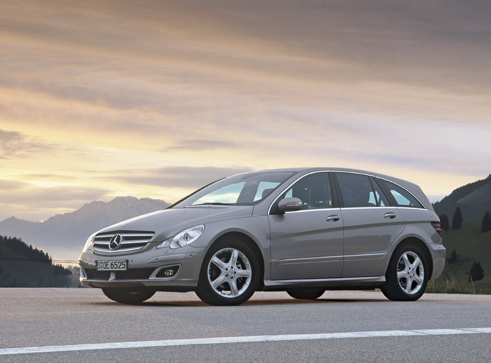
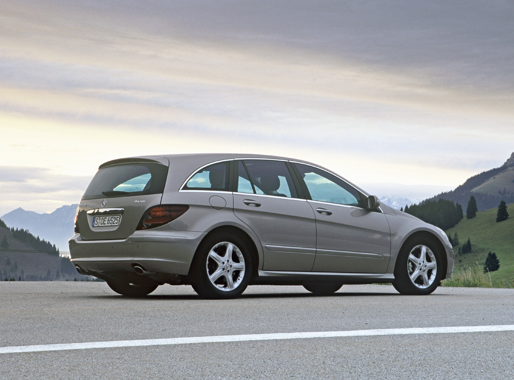
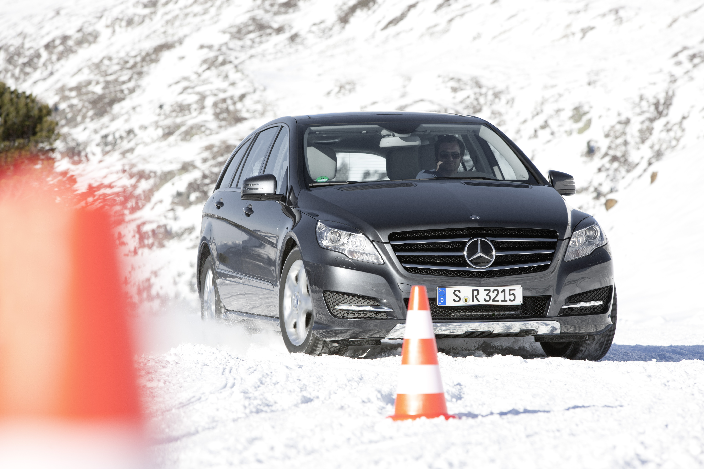
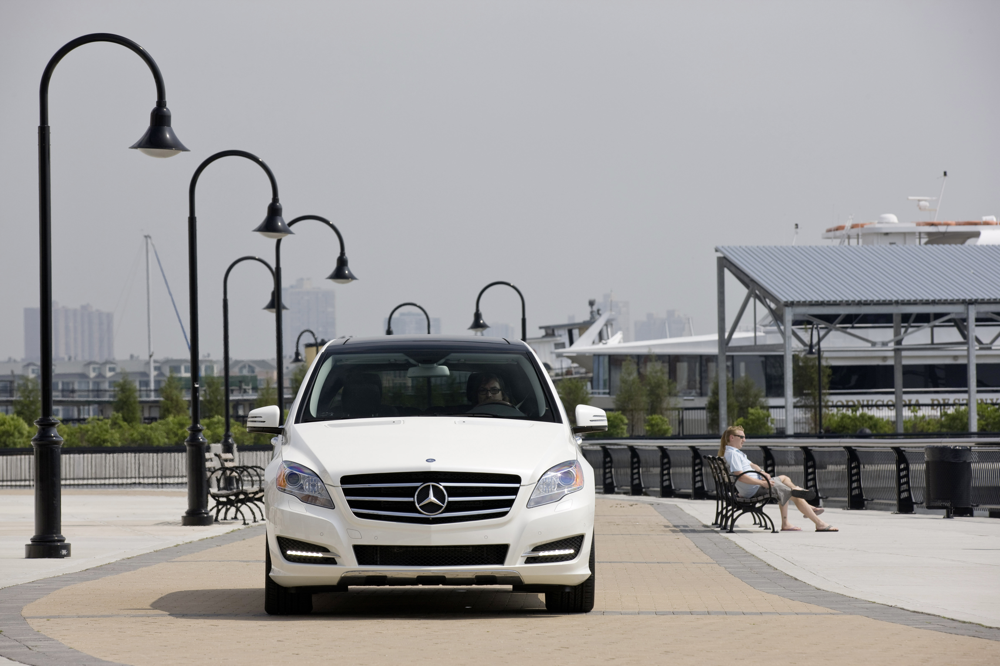
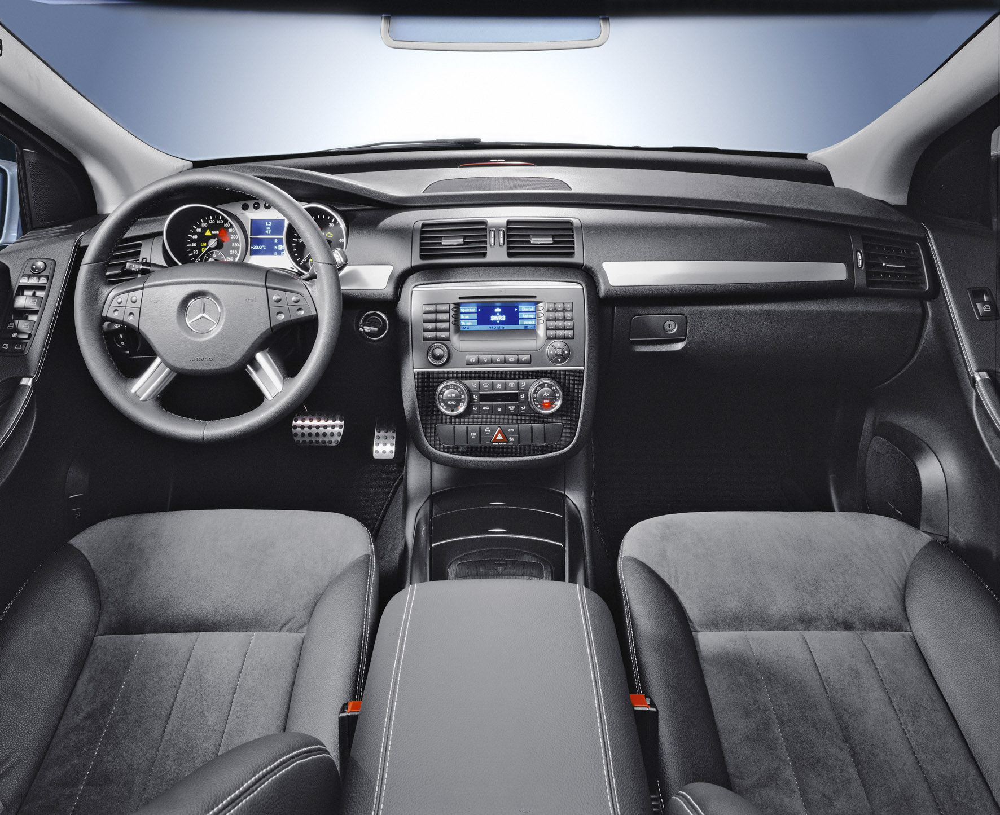
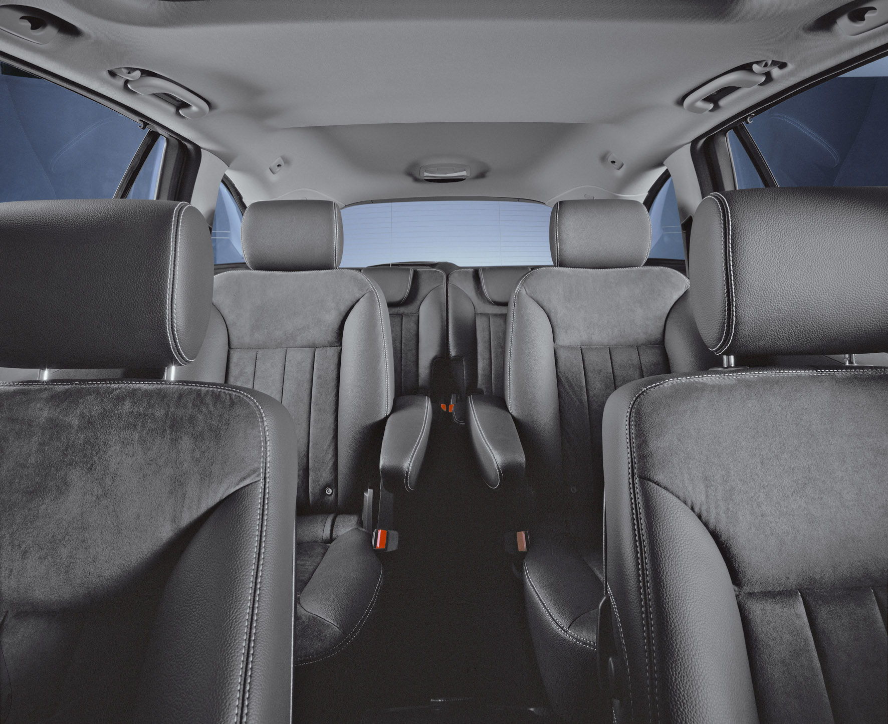

R-klass
Familjebil i premiumklass
{kind=link}
R-klass
{kind=link}
R-klass Lang (förlängd)






Mercedes R-Klass moderniserad - nytt framparti, snålare motorer
Mångsidighet när den är som bäst
Mercedes-Benz ”bredaste” modell har nu moderniserats med nytt framparti och interiör samt snålare modeller och sjuväxlad automatlåda som standard. Modellen vänder sig till dem som söker
- sedanens komfort och lyxbilskänsla
- kombins variabla lastutrymme, max 1 950 respektive 2 385 liter i L-versionen
- familjebilens många sittplatser; fem-, sex- eller sjusitsig
och som dessutom kan tillgodose särklassigt benutrymme bak i den förlängda versionen samt den extra trygghet som fyrhjulsdrift ger i 4MATIC-utförandet. Det svenska ”från-priset” är 498 900 kr
Mercedes R-Klass debuterade 2006 men hade redan ett par år tidigare visats upp som projektbilen GST – som i Grand Sports Tourer. Det stod redan från början klart att modellen var avsedd för sex åkande, som skulle kunna åka lika bekvämt i framsätena som på övriga platser. Sedan dess har R-Klassen ”breddats” och nu kan den beställas med fem, sex eller sju platser. I fem- och sjusitsigt utförande har R-Klass traditionell tresits soffa i mellanraden.
Utöver ett helt nytt fram- och ett försiktigt förfinat bakparti återfinns förbättringarna på motor- och växellådssidan. Med hjälp av så kallad BlueTEC-teknik har Mercedes-Benz gjort en av de absolut minst miljöbelastande dieselmotorer som finns. Bensindrivna R 350 BlueTEC har bibehållen effekt (211 hästkrafter) och vridmoment (540 Newtonmeter) men förbrukningen har genom förfining sänkts till 8,5 liter per hundra kilometer. I Mercedes R 300 CDI 4MATIC har motoreffekten ökats från 224 till 265 hk och det maximala vridmomentet höjts från 510 till 620 Nm, parallellt har förbrukningen i l/100 km minskat till 8,5.
MOTORALTERNATIV
| Modell | Årsmodell | Motor | Cylindervolym | Effekt | Bränslesystem |
| R320 CDI | 2005-2009 | OM642: 6-cyl V-motor dohc | 2987 cm³ | 224 hk | Common rail turbodiesel |
| R350 | 2005- | M272: 6-cyl V-motor dohc | 3498 cm³ | 272 hk | Bensin, Insprutning |
| R500 | 2005-2007 | M113: 8-cyl V-motor ohc | 4966 cm³ | 306 hk | Bensin, Insprutning |
| R280 | 2006- | OM642: 6-cyl V-motor dohc | 2987 cm³ | 190 hk | Common rail turbodiesel |
| R63 AMG | 2006-2007 | M156: 8-cyl V-motor dohc | 6208 cm³ | 476 hk | Bensin, Insprutning |
| R280 | 2008- | M272: 6-cyl V-motor dohc | 2996 cm³ | 231 hk | Bensin, Insprutning |
| R500 | 2008- | M273: 8-cyl V-motor dohc | 5461 cm³ | 388 hk | Bensin, Insprutning |
| R350 BluTEC | 2009- | OM642: 6-cyl V-motor dohc | 2987 cm³ | 211 hk | Common rail turbodiesel |
| R350 CDI | 2010- | OM642: 6-cyl V-motor dohc | 2987 cm³ | 265 hk | Common rail turbodiesel |